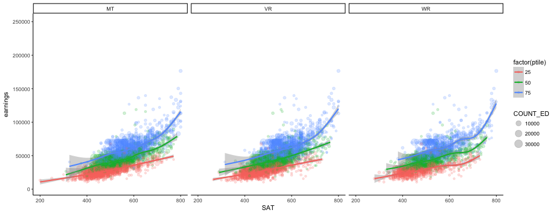
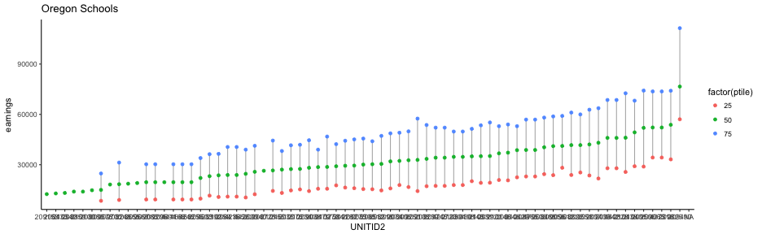
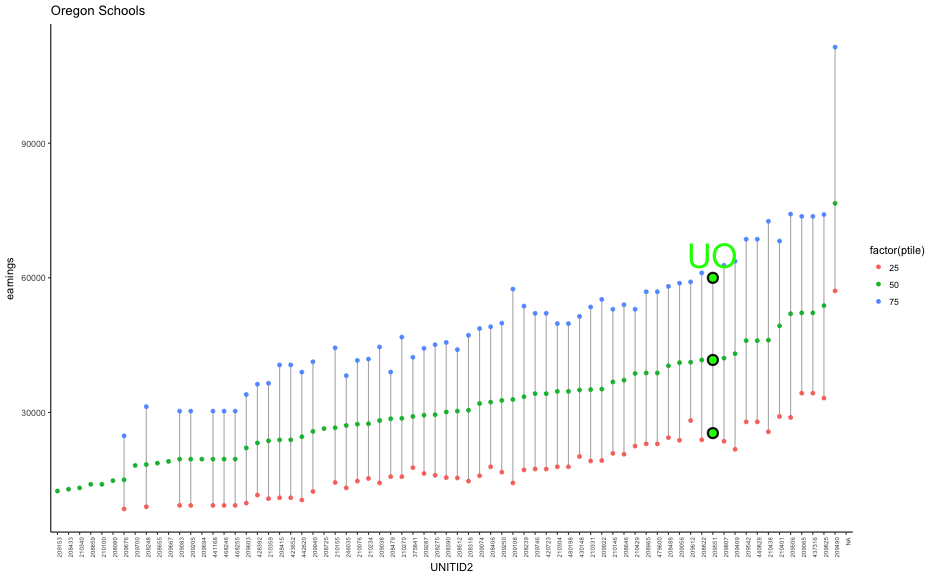

Agenda
- Load College scorecard data
- Load Earnings data
- Tidy and join
- Joins with data viz
- semi- and anti-joins, mostly
Read in college scorecard data
library(tidyverse)
library(rio)
library(janitor)
scorecard <- import("../../data/Most-Recent-Cohorts-Scorecard-Elements.csv",
setclass = "tbl_df",
na = c("NULL", "PrivacySuppressed")) %>%
clean_names()
head(scorecard)
## # A tibble: 6 x 122
## unitid opeid opeid6 instnm city
## <int> <int> <int> <chr> <chr>
## 1 100654 100200 1002 Alabama A & M University Normal
## 2 100663 105200 1052 University of Alabama at Birmingham Birmingham
## 3 100690 2503400 25034 Amridge University Montgomery
## 4 100706 105500 1055 University of Alabama in Huntsville Huntsville
## 5 100724 100500 1005 Alabama State University Montgomery
## 6 100751 105100 1051 The University of Alabama Tuscaloosa
## # ... with 117 more variables: stabbr <chr>, insturl <chr>, npcurl <chr>,
## # hcm2 <int>, preddeg <int>, control <int>, locale <int>, hbcu <int>,
## # pbi <int>, annhi <int>, tribal <int>, aanapii <int>, hsi <int>,
## # nanti <int>, menonly <int>, womenonly <int>, relaffil <int>,
## # satvr25 <int>, satvr75 <int>, satmt25 <int>, satmt75 <int>,
## # satwr25 <int>, satwr75 <int>, satvrmid <int>, satmtmid <int>,
## # satwrmid <int>, actcm25 <int>, actcm75 <int>, acten25 <int>,
## # acten75 <int>, actmt25 <int>, actmt75 <int>, actwr25 <int>,
## # actwr75 <int>, actcmmid <int>, actenmid <int>, actmtmid <int>,
## # actwrmid <int>, sat_avg <int>, sat_avg_all <int>, pcip01 <dbl>,
## # pcip03 <dbl>, pcip04 <dbl>, pcip05 <dbl>, pcip09 <dbl>, pcip10 <dbl>,
## # pcip11 <dbl>, pcip12 <dbl>, pcip13 <dbl>, pcip14 <dbl>, pcip15 <dbl>,
## # pcip16 <dbl>, pcip19 <dbl>, pcip22 <dbl>, pcip23 <dbl>, pcip24 <dbl>,
## # pcip25 <dbl>, pcip26 <dbl>, pcip27 <dbl>, pcip29 <dbl>, pcip30 <dbl>,
## # pcip31 <dbl>, pcip38 <dbl>, pcip39 <dbl>, pcip40 <dbl>, pcip41 <dbl>,
## # pcip42 <dbl>, pcip43 <dbl>, pcip44 <dbl>, pcip45 <dbl>, pcip46 <dbl>,
## # pcip47 <dbl>, pcip48 <dbl>, pcip49 <dbl>, pcip50 <dbl>, pcip51 <dbl>,
## # pcip52 <dbl>, pcip54 <dbl>, distanceonly <int>, ugds <int>,
## # ugds_white <dbl>, ugds_black <dbl>, ugds_hisp <dbl>, ugds_asian <dbl>,
## # ugds_aian <dbl>, ugds_nhpi <dbl>, ugds_2mor <dbl>, ugds_nra <dbl>,
## # ugds_unkn <dbl>, pptug_ef <dbl>, curroper <int>, npt4_pub <int>,
## # npt4_priv <int>, npt41_pub <int>, npt42_pub <int>, npt43_pub <int>,
## # npt44_pub <int>, npt45_pub <int>, npt41_priv <int>, npt42_priv <int>,
## # ...
Read in earnings data
earnings <- import("../../data/Most-Recent-Cohorts-Treasury-Elements.csv",
setclass = "tbl_df",
na = c("NULL", "PrivacySuppressed")) %>%
clean_names()
head(earnings)
## # A tibble: 6 x 89
## unitid opeid opeid6 instnm count_ed
## <int> <int> <int> <chr> <int>
## 1 100654 100200 1002 Alabama A & M University 1277
## 2 100663 105200 1052 University of Alabama at Birmingham 2831
## 3 100690 2503400 25034 Amridge University 191
## 4 100706 105500 1055 University of Alabama in Huntsville 1361
## 5 100724 100500 1005 Alabama State University 1609
## 6 100751 105100 1051 The University of Alabama 4210
## # ... with 84 more variables: agege24 <dbl>, pct_white <dbl>,
## # pct_black <dbl>, pct_asian <dbl>, pct_hispanic <dbl>, pct_ba <dbl>,
## # pct_grad_prof <dbl>, pct_born_us <dbl>, median_hh_inc <dbl>,
## # poverty_rate <dbl>, unemp_rate <dbl>, ln_median_hh_inc <dbl>,
## # count_nwne_p10 <int>, count_wne_p10 <int>, mn_earn_wne_p10 <int>,
## # md_earn_wne_p10 <int>, pct10_earn_wne_p10 <int>,
## # pct25_earn_wne_p10 <int>, pct75_earn_wne_p10 <int>,
## # pct90_earn_wne_p10 <int>, sd_earn_wne_p10 <int>,
## # count_wne_inc1_p10 <int>, count_wne_inc2_p10 <int>,
## # count_wne_inc3_p10 <int>, count_wne_indep0_inc1_p10 <int>,
## # count_wne_indep0_p10 <int>, count_wne_indep1_p10 <int>,
## # count_wne_male0_p10 <int>, count_wne_male1_p10 <int>,
## # gt_25k_p10 <dbl>, mn_earn_wne_inc1_p10 <int>,
## # mn_earn_wne_inc2_p10 <int>, mn_earn_wne_inc3_p10 <int>,
## # mn_earn_wne_indep0_inc1_p10 <int>, mn_earn_wne_indep0_p10 <int>,
## # mn_earn_wne_indep1_p10 <int>, mn_earn_wne_male0_p10 <int>,
## # mn_earn_wne_male1_p10 <int>, count_nwne_p6 <int>, count_wne_p6 <int>,
## # mn_earn_wne_p6 <int>, md_earn_wne_p6 <int>, pct10_earn_wne_p6 <int>,
## # pct25_earn_wne_p6 <int>, pct75_earn_wne_p6 <int>,
## # pct90_earn_wne_p6 <int>, sd_earn_wne_p6 <int>,
## # count_wne_inc1_p6 <int>, count_wne_inc2_p6 <int>,
## # count_wne_inc3_p6 <int>, count_wne_indep0_inc1_p6 <int>,
## # count_wne_indep0_p6 <int>, count_wne_indep1_p6 <int>,
## # count_wne_male0_p6 <int>, count_wne_male1_p6 <int>, gt_25k_p6 <dbl>,
## # mn_earn_wne_inc1_p6 <int>, mn_earn_wne_inc2_p6 <int>,
## # mn_earn_wne_inc3_p6 <int>, mn_earn_wne_indep0_inc1_p6 <int>,
## # mn_earn_wne_indep0_p6 <int>, mn_earn_wne_indep1_p6 <int>,
## # mn_earn_wne_male0_p6 <int>, mn_earn_wne_male1_p6 <int>,
## # count_nwne_p7 <int>, count_wne_p7 <int>, mn_earn_wne_p7 <int>,
## # sd_earn_wne_p7 <int>, gt_25k_p7 <dbl>, count_nwne_p8 <int>,
## # count_wne_p8 <int>, mn_earn_wne_p8 <int>, md_earn_wne_p8 <int>,
## # pct10_earn_wne_p8 <int>, pct25_earn_wne_p8 <int>,
## # pct75_earn_wne_p8 <int>, pct90_earn_wne_p8 <int>,
## # sd_earn_wne_p8 <int>, gt_25k_p8 <dbl>, count_nwne_p9 <int>,
## # count_wne_p9 <int>, mn_earn_wne_p9 <int>, sd_earn_wne_p9 <int>,
## # gt_25k_p9 <dbl>
Pop Quiz (of sorts)
With a partner, or by yourself, try to address the following:
- What is the keyed variable(s) in each dataset. Confirm that this is so.
- How would you go about merging these datasets?
Keyed variables
unitid?
scorecard %>% count(unitid) %>% filter(n > 1)## # A tibble: 0 x 2 ## # ... with 2 variables: unitid <int>, n <int>earnings %>% count(unitid) %>% filter(n > 1)## # A tibble: 0 x 2 ## # ... with 2 variables: unitid <int>, n <int>
Joining
We have more than one column in common. Would it hurt to merge by all?
- As long as the variables are the same thing and have the same values in both datasets, then it’s fine and even preferable to merge by all the variables. Otherwise, you’ll end up with
.xand.yversions of the same thing.
left_join(scorecard, earnings, by = "unitid")
## # A tibble: 7,703 x 210
## unitid opeid.x opeid6.x instnm.x
## <int> <int> <int> <chr>
## 1 100654 100200 1002 Alabama A & M University
## 2 100663 105200 1052 University of Alabama at Birmingham
## 3 100690 2503400 25034 Amridge University
## 4 100706 105500 1055 University of Alabama in Huntsville
## 5 100724 100500 1005 Alabama State University
## 6 100751 105100 1051 The University of Alabama
## 7 100760 100700 1007 Central Alabama Community College
## 8 100812 100800 1008 Athens State University
## 9 100830 831000 8310 Auburn University at Montgomery
## 10 100858 100900 1009 Auburn University
## # ... with 7,693 more rows, and 206 more variables: city <chr>,
## # stabbr <chr>, insturl <chr>, npcurl <chr>, hcm2 <int>, preddeg <int>,
## # control <int>, locale <int>, hbcu <int>, pbi <int>, annhi <int>,
## # tribal <int>, aanapii <int>, hsi <int>, nanti <int>, menonly <int>,
## # womenonly <int>, relaffil <int>, satvr25 <int>, satvr75 <int>,
## # satmt25 <int>, satmt75 <int>, satwr25 <int>, satwr75 <int>,
## # satvrmid <int>, satmtmid <int>, satwrmid <int>, actcm25 <int>,
## # actcm75 <int>, acten25 <int>, acten75 <int>, actmt25 <int>,
## # actmt75 <int>, actwr25 <int>, actwr75 <int>, actcmmid <int>,
## # actenmid <int>, actmtmid <int>, actwrmid <int>, sat_avg <int>,
## # sat_avg_all <int>, pcip01 <dbl>, pcip03 <dbl>, pcip04 <dbl>,
## # pcip05 <dbl>, pcip09 <dbl>, pcip10 <dbl>, pcip11 <dbl>, pcip12 <dbl>,
## # pcip13 <dbl>, pcip14 <dbl>, pcip15 <dbl>, pcip16 <dbl>, pcip19 <dbl>,
## # pcip22 <dbl>, pcip23 <dbl>, pcip24 <dbl>, pcip25 <dbl>, pcip26 <dbl>,
## # pcip27 <dbl>, pcip29 <dbl>, pcip30 <dbl>, pcip31 <dbl>, pcip38 <dbl>,
## # pcip39 <dbl>, pcip40 <dbl>, pcip41 <dbl>, pcip42 <dbl>, pcip43 <dbl>,
## # pcip44 <dbl>, pcip45 <dbl>, pcip46 <dbl>, pcip47 <dbl>, pcip48 <dbl>,
## # pcip49 <dbl>, pcip50 <dbl>, pcip51 <dbl>, pcip52 <dbl>, pcip54 <dbl>,
## # distanceonly <int>, ugds <int>, ugds_white <dbl>, ugds_black <dbl>,
## # ugds_hisp <dbl>, ugds_asian <dbl>, ugds_aian <dbl>, ugds_nhpi <dbl>,
## # ugds_2mor <dbl>, ugds_nra <dbl>, ugds_unkn <dbl>, pptug_ef <dbl>,
## # curroper <int>, npt4_pub <int>, npt4_priv <int>, npt41_pub <int>,
## # npt42_pub <int>, npt43_pub <int>, npt44_pub <int>, npt45_pub <int>,
## # npt41_priv <int>, ...
Join by all variables in common
joined <- left_join(scorecard, earnings)
## Joining, by = c("unitid", "opeid", "opeid6", "instnm", "md_earn_wne_p10", "gt_25k_p6")
joined
## # A tibble: 7,703 x 205
## unitid opeid opeid6 instnm
## <int> <int> <int> <chr>
## 1 100654 100200 1002 Alabama A & M University
## 2 100663 105200 1052 University of Alabama at Birmingham
## 3 100690 2503400 25034 Amridge University
## 4 100706 105500 1055 University of Alabama in Huntsville
## 5 100724 100500 1005 Alabama State University
## 6 100751 105100 1051 The University of Alabama
## 7 100760 100700 1007 Central Alabama Community College
## 8 100812 100800 1008 Athens State University
## 9 100830 831000 8310 Auburn University at Montgomery
## 10 100858 100900 1009 Auburn University
## # ... with 7,693 more rows, and 201 more variables: city <chr>,
## # stabbr <chr>, insturl <chr>, npcurl <chr>, hcm2 <int>, preddeg <int>,
## # control <int>, locale <int>, hbcu <int>, pbi <int>, annhi <int>,
## # tribal <int>, aanapii <int>, hsi <int>, nanti <int>, menonly <int>,
## # womenonly <int>, relaffil <int>, satvr25 <int>, satvr75 <int>,
## # satmt25 <int>, satmt75 <int>, satwr25 <int>, satwr75 <int>,
## # satvrmid <int>, satmtmid <int>, satwrmid <int>, actcm25 <int>,
## # actcm75 <int>, acten25 <int>, acten75 <int>, actmt25 <int>,
## # actmt75 <int>, actwr25 <int>, actwr75 <int>, actcmmid <int>,
## # actenmid <int>, actmtmid <int>, actwrmid <int>, sat_avg <int>,
## # sat_avg_all <int>, pcip01 <dbl>, pcip03 <dbl>, pcip04 <dbl>,
## # pcip05 <dbl>, pcip09 <dbl>, pcip10 <dbl>, pcip11 <dbl>, pcip12 <dbl>,
## # pcip13 <dbl>, pcip14 <dbl>, pcip15 <dbl>, pcip16 <dbl>, pcip19 <dbl>,
## # pcip22 <dbl>, pcip23 <dbl>, pcip24 <dbl>, pcip25 <dbl>, pcip26 <dbl>,
## # pcip27 <dbl>, pcip29 <dbl>, pcip30 <dbl>, pcip31 <dbl>, pcip38 <dbl>,
## # pcip39 <dbl>, pcip40 <dbl>, pcip41 <dbl>, pcip42 <dbl>, pcip43 <dbl>,
## # pcip44 <dbl>, pcip45 <dbl>, pcip46 <dbl>, pcip47 <dbl>, pcip48 <dbl>,
## # pcip49 <dbl>, pcip50 <dbl>, pcip51 <dbl>, pcip52 <dbl>, pcip54 <dbl>,
## # distanceonly <int>, ugds <int>, ugds_white <dbl>, ugds_black <dbl>,
## # ugds_hisp <dbl>, ugds_asian <dbl>, ugds_aian <dbl>, ugds_nhpi <dbl>,
## # ugds_2mor <dbl>, ugds_nra <dbl>, ugds_unkn <dbl>, pptug_ef <dbl>,
## # curroper <int>, npt4_pub <int>, npt4_priv <int>, npt41_pub <int>,
## # npt42_pub <int>, npt43_pub <int>, npt44_pub <int>, npt45_pub <int>,
## # npt41_priv <int>, ...
Sometimes this can lead to a mess
- How would you go about tidying the prior dataset?
- Take a few minutes and discuss this with your neighbor. Try a few strategies, if you’d like.
Specific RQs?
With big(-ish) datasets like this, it’s generally best to first think about your research questions/the things you want to explore, and limit the variables before the merge.
Let’s explore the relation between SAT scores and income after college.
First: Select variables
- From earnings
- pct25_earn_wne_p10, md_earn_wne_p10, pct75_earn_wne_p10
- 25th, Median (50th) and 75th percentiles of earnings for students 10 years after entry
- count_ed
- Count of students in the earnings cohort
- unitid
- Keyed variable
- pct25_earn_wne_p10, md_earn_wne_p10, pct75_earn_wne_p10
earnings_small <- earnings %>%
select(1, count_ed, pct25_earn_wne_p10, md_earn_wne_p10, pct75_earn_wne_p10)
earnings_small
## # A tibble: 7,703 x 5
## unitid count_ed pct25_earn_wne_p10 md_earn_wne_p10 pct75_earn_wne_p10
## <int> <int> <int> <int> <int>
## 1 100654 1277 17500 30300 46600
## 2 100663 2831 24400 39700 56500
## 3 100690 191 22900 40100 57900
## 4 100706 1361 25900 45500 69500
## 5 100724 1609 14600 26600 40600
## 6 100751 4210 27600 41900 61300
## 7 100760 1091 15500 27500 41400
## 8 100812 1144 25400 39000 49800
## 9 100830 1178 20100 35000 49200
## 10 100858 3536 30500 45700 66900
## # ... with 7,693 more rows
- From scorecard
- SAT percentile variables (25th, 50th, and 75th; exclude averages)
- UNITID
- Keyed variable
scorecard_small <- scorecard %>%
select(1, contains("sat")) %>%
select(-contains("avg"))
scorecard_small
## # A tibble: 7,703 x 10
## unitid satvr25 satvr75 satmt25 satmt75 satwr25 satwr75 satvrmid
## <int> <int> <int> <int> <int> <int> <int> <int>
## 1 100654 377 470 370 470 370 470 424
## 2 100663 500 640 490 640 NA NA 570
## 3 100690 NA NA NA NA NA NA NA
## 4 100706 520 670 530 650 NA NA 595
## 5 100724 380 470 380 480 NA NA 425
## 6 100751 490 620 500 630 480 600 555
## 7 100760 NA NA NA NA NA NA NA
## 8 100812 NA NA NA NA NA NA NA
## 9 100830 433 538 468 550 NA NA 486
## 10 100858 520 630 530 645 520 610 575
## # ... with 7,693 more rows, and 2 more variables: satmtmid <int>,
## # satwrmid <int>
A note on the SAT variables
names(scorecard_small)
## [1] "unitid" "satvr25" "satvr75" "satmt25" "satmt75" "satwr25"
## [7] "satwr75" "satvrmid" "satmtmid" "satwrmid"
Take it from here: Tidy then join! (15-20 minutes)
Tidy earnings
earnings_tidy <- earnings_small %>%
gather(var, earnings, -1:-2) %>%
separate(var, c("ptile", "dis1", "dis2", "dis3"), sep = "_") %>%
mutate(ptile = ifelse(ptile == "md", "50", ptile),
ptile = parse_number(ptile)) %>%
select(-contains("dis"))
earnings_tidy
## # A tibble: 23,109 x 4
## unitid count_ed ptile earnings
## <int> <int> <dbl> <int>
## 1 100654 1277 25 17500
## 2 100663 2831 25 24400
## 3 100690 191 25 22900
## 4 100706 1361 25 25900
## 5 100724 1609 25 14600
## 6 100751 4210 25 27600
## 7 100760 1091 25 15500
## 8 100812 1144 25 25400
## 9 100830 1178 25 20100
## 10 100858 3536 25 30500
## # ... with 23,099 more rows
Tidy scorecard
scorecard_tidy <- scorecard_small %>%
gather(var, sat, -1) %>%
separate(var, c("dis", "tmp"), 3) %>%
separate(tmp, c("test", "ptile"), 2) %>%
mutate(ptile = as.numeric(recode(ptile, "mid" = "50"))) %>%
select(-dis)
scorecard_tidy
## # A tibble: 69,327 x 4
## unitid test ptile sat
## <int> <chr> <dbl> <int>
## 1 100654 vr 25 377
## 2 100663 vr 25 500
## 3 100690 vr 25 NA
## 4 100706 vr 25 520
## 5 100724 vr 25 380
## 6 100751 vr 25 490
## 7 100760 vr 25 NA
## 8 100812 vr 25 NA
## 9 100830 vr 25 433
## 10 100858 vr 25 520
## # ... with 69,317 more rows
Join!
td <- left_join(earnings_tidy, scorecard_tidy)
## Joining, by = c("unitid", "ptile")
td
## # A tibble: 69,327 x 6
## unitid count_ed ptile earnings test sat
## <int> <int> <dbl> <int> <chr> <int>
## 1 100654 1277 25 17500 vr 377
## 2 100654 1277 25 17500 mt 370
## 3 100654 1277 25 17500 wr 370
## 4 100663 2831 25 24400 vr 500
## 5 100663 2831 25 24400 mt 490
## 6 100663 2831 25 24400 wr NA
## 7 100690 191 25 22900 vr NA
## 8 100690 191 25 22900 mt NA
## 9 100690 191 25 22900 wr NA
## 10 100706 1361 25 25900 vr 520
## # ... with 69,317 more rows
Visualize!
Explore relation between SAT scores and earnings 10 years later
- 10 minutes.
- Come up with a couple plots. I’ll then walk you through what I did.
theme_set(theme_light())
ggplot(td, aes(sat, earnings, color = factor(ptile))) +
geom_point(aes(size = count_ed), alpha = 0.2) +
geom_smooth() +
scale_color_brewer(palette = "Set2") +
facet_grid(~test)

Couple things
- All our points look basically the same size, even though we told them to vary according to count.
- Our axis label goes way up high.
What’s causing these?
ggplot(td, aes(count_ed)) +
geom_histogram()

What school(s) is so large?
huge <- td %>%
filter(count_ed > 50000) %>%
distinct(unitid)
huge
## # A tibble: 19 x 1
## unitid
## <int>
## 1 380465
## 2 382063
## 3 405997
## 4 420042
## 5 432223
## 6 432241
## 7 434973
## 8 439297
## 9 440420
## 10 440457
## 11 440466
## 12 442161
## 13 443544
## 14 445300
## 15 445319
## 16 445391
## 17 446729
## 18 448567
## 19 448822
semi-join
- We can use the
semi_joinwith the huge dataset to extract the names associated with these school ids. - Try it!
- What do you notice?
- Try using
anti_jointo remove these schools from your tidied data.
semi_join(scorecard, huge) %>%
select(instnm)
## Joining, by = "unitid"
## # A tibble: 19 x 1
## instnm
## <chr>
## 1 University of Phoenix-Utah
## 2 University of Phoenix-Puerto Rico
## 3 University of Phoenix-New Mexico
## 4 University of Phoenix-Hawaii
## 5 University of Phoenix-Washington
## 6 University of Phoenix-Oregon
## 7 University of Phoenix-Maryland
## 8 University of Phoenix-Ohio
## 9 University of Phoenix-Massachusetts
## 10 University of Phoenix-Wisconsin
## 11 University of Phoenix-Idaho
## 12 University of Phoenix-Illinois
## 13 University of Phoenix-Indiana
## 14 University of Phoenix-New Jersey
## 15 University of Phoenix-Minnesota
## 16 University of Phoenix-Kentucky
## 17 University of Phoenix-Iowa
## 18 University of Phoenix-South Carolina
## 19 University of Phoenix-Connecticut
Remove University of Phoenix Schools
td <- anti_join(td, huge)
## Joining, by = "unitid"
td
## # A tibble: 69,156 x 6
## unitid count_ed ptile earnings test sat
## <int> <int> <dbl> <int> <chr> <int>
## 1 100654 1277 25 17500 vr 377
## 2 100654 1277 25 17500 mt 370
## 3 100654 1277 25 17500 wr 370
## 4 100663 2831 25 24400 vr 500
## 5 100663 2831 25 24400 mt 490
## 6 100663 2831 25 24400 wr NA
## 7 100690 191 25 22900 vr NA
## 8 100690 191 25 22900 mt NA
## 9 100690 191 25 22900 wr NA
## 10 100706 1361 25 25900 vr 520
## # ... with 69,146 more rows
Try again
(a little better)
ggplot(td, aes(sat, earnings, color = factor(ptile))) +
geom_point(aes(size = count_ed), alpha = 0.2) +
geom_smooth() +
scale_color_brewer(palette = "Set2") +
facet_grid(~test)

Transform y-axis
ggplot(td, aes(sat, earnings, color = factor(ptile))) +
geom_point(aes(size = count_ed), alpha = 0.2) +
geom_smooth() +
scale_color_brewer(palette = "Set2") +
scale_y_log10(labels = scales::dollar) +
facet_grid(~test)

Difference between subjects?
- Currently, we’ve been looking at differences between percentiles within subject. How might you look at differences between subjects within percentiles?
Flip grouping and faceting
Any evidence for differences by content area?
ggplot(td, aes(sat, earnings, color = test)) + geom_point(alpha = 0.2) + geom_smooth() + scale_color_brewer(palette = "Set2") + scale_y_log10(label = scales::dollar) + facet_grid(~ptile)

Oregon Schools
- How could we use joins to limit our td dataset to only schools in Oregon?
- Try it
Limit to Oregon
or_schools <- scorecard %>%
select(1, stabbr) %>%
filter(stabbr == "OR")
or <- semi_join(td, or_schools)
## Joining, by = "unitid"
or
## # A tibble: 846 x 6
## unitid count_ed ptile earnings test sat
## <int> <int> <dbl> <int> <chr> <int>
## 1 208080 73 25 NA vr NA
## 2 208080 73 25 NA mt NA
## 3 208080 73 25 NA wr NA
## 4 208123 68 25 NA vr NA
## 5 208123 68 25 NA mt NA
## 6 208123 68 25 NA wr NA
## 7 208187 NA 25 NA vr NA
## 8 208187 NA 25 NA mt NA
## 9 208187 NA 25 NA wr NA
## 10 208239 1020 25 17200 vr NA
## # ... with 836 more rows
Reproduce plot for Oregon
ggplot(or, aes(sat, earnings, color = factor(ptile))) +
geom_point(aes(size = count_ed), alpha = 0.7) +
geom_smooth(se = FALSE, span = 1.5) +
scale_color_brewer(palette = "Set2") +
scale_y_log10(labels = scales::dollar) +
facet_grid(~test)

Another example
Plot quartiles of schools
or_math <- filter(or, test == "mt")
ggplot(or_math, aes(factor(unitid), earnings)) +
geom_line(aes(group = factor(unitid)), color = "gray70") +
geom_point(aes(color = factor(ptile))) +
ggtitle("Oregon Schools") +
theme(axis.text.x = element_text(angle = 90, hjust = 1))

Reorder
ordered <- or_math %>%
filter(ptile == 50 & !is.na(earnings)) %>%
arrange(earnings) %>%
mutate(unitid2 = 1:n(),
unitid2 = factor(unitid2,
levels = unitid2,
labels = unitid)) %>%
select(1, 7)
or_math <- left_join(or_math, ordered)
Ordered plot
ggplot(or_math, aes(unitid2, earnings)) +
geom_line(aes(group = unitid2), color = "gray70") +
geom_point(aes(color = factor(ptile))) +
ggtitle("Oregon Schools") +
theme(axis.text.x = element_text(angle = 90, hjust = 1))

Highlight UO
uo <- semi_join(or_math,
filter(scorecard, instnm == "University of Oregon")) %>%
filter(test == "mt")
ggplot(or_math, aes(unitid2, earnings)) +
geom_line(aes(group = unitid2), color = "gray70") +
geom_point(aes(color = factor(ptile))) +
annotate("text", x = "209551", y = 85000, label = "UO", col = "palegreen4", size = 12) +
geom_point(data = uo, size = 3, col = "palegreen4") +
ggtitle("Oregon Schools") +
theme(axis.text.x = element_text(angle = 90, hjust = 1))
